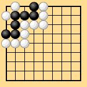

|
| 第2-3図 |
|---|
| 2.3 日本式ルールの基本的問題点(例) |
|---|
| 2.3.1 隅の曲四目無条件死(劫尽し) |
|---|
| 第2-1図はいわゆる隅の曲四目で、日本では古来より無条件死としている。然しこれは白から取りにゆけば劫となるけれども、黒からは劫材にはなっても生きることは出来ない。従って白は劫材を全く無くしてから取りにゆけば、黒は劫を争えないから死となる。一般には以上の様な理由づけをしているのであるけれども、これは極めて不完全である。それは第2-2図の1の点は、白からは消すことの出来ない劫材(黒からの)である。従って“劫材を全く無くしてから”ということは出来る場合と無くすることが出来ない場合があるから、前記の理由は全くおかしい。黒は2目を犠牲にして、1を劫に使えば左上の黒を助けることができることをたしかめられたい。隅四目を無条件死としなければ第2-2図はどちらかが何目勝ちになるか。 |
|  | |
| 第2-1図 | 第2-2図 |
|---|
|
又第2-3図は隅の曲四目の外側の白と黒に両劫が附着している図である。右側の黒もセキくづれで死とすることは納得できないだろう。 |
|
| 第2-3図 |
|---|
| “隅の曲四目無条件死”の規定は合理的に説明は不可能であり、不自然である。従って新ルール案としては、この規定は排除しなければならない。 |